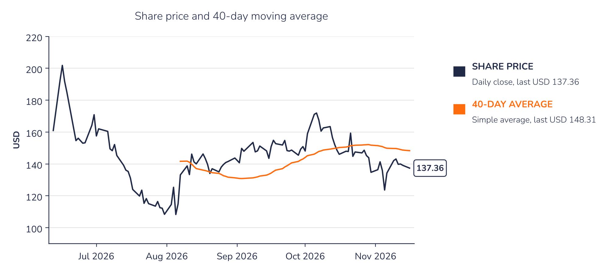
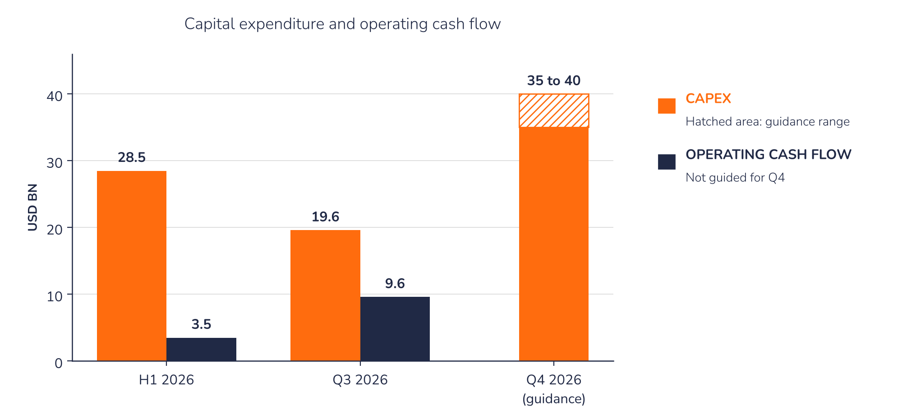

Ad-hoc opinion · Space and AI infrastructure
Growth and spending in two charts
AI revenue has overtaken the historical businesses within a year, while capital spending has run well ahead of the cash the company generates. Both trends would need to continue for the current valuation to be justified.
Chart 1 · SPCX: share price and 40-day moving average
Daily close in USD since the Nasdaq listing on 12 June 2026

Source: Syz Research, Bloomberg.
Chart 2 · SPCX: capex against operating cash flow
USD bn; fourth-quarter capex is the company's guidance range

Source: Syz Research, SpaceX Q3 2026 results and earnings call. H1 2026 figures are Syz calculations.